100 Years of Design Evolution
The Cyclical Pendulum of Visual Culture
Graphic design never evolves in a vacuum. It is the visual mirror of humanity: an aesthetic pendulum that continuously swings between periods of ornamentation & emotional expression (1920s Art Deco, 1960s Psychedelia, 1980s Memphis, 2020s Neo-Brutalism) and periods of austere rationalism & functional order (1930s WPA Realism, 1950s/60s Swiss Modernism, 2000s/2010s Flat Design).
The 3 Engine Forces Driving Design Revolutions
- 1. Technological Mediums: From lithographic stone and silkscreen to phototypesetting, desktop Macintoshes, web browsers, and generative AI. The medium defines the aesthetic boundary.
- 2. Socio-Economic Climate: Post-war prosperity triggers consumer optimism and luxury; economic depressions and wartime crises demand stoic clarity, patriotism, and frugality.
- 3. Generational Rebellion: Every young generation of visual artists aggressively rejects the visual clichés of their predecessors.
Classroom Checkpoint: The 25-Year Nostalgia Loop
Why do graphic design aesthetics (such as 1980s neon grids or 1990s Y2K cyber graphics) experience massive mainstream resurgences roughly 25 to 30 years after their original debut?
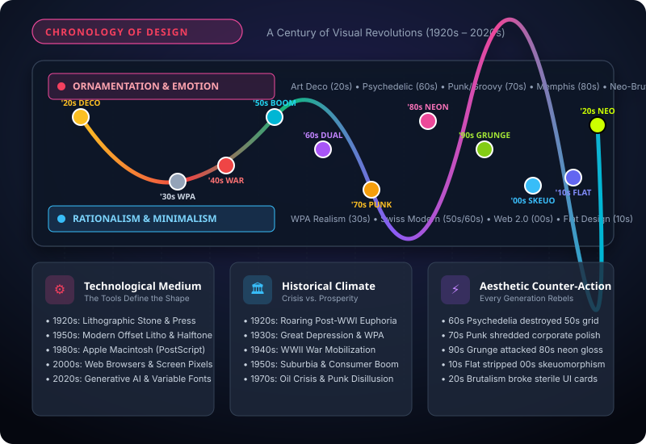
Art Deco & The Jazz Age
Historical Context: The Machine Age & Paris 1925
Emerging from the ruins of World War I, the 1920s (“The Roaring Twenties”) was an era of intoxicating economic exuberance, jazz clubs, flapper culture, and rapid industrialization. Formalized at the 1925 Exposition Internationale des Arts Décoratifs et Industriels Modernes in Paris, Art Deco became the visual signature of modern luxury, transatlantic ocean liners, locomotives, and soaring skyscrapers.
Stylistic Hallmarks & Visual Language
- Stepped Ziggurats & Chevrons: Symmetrical geometric pyramids inspired by ancient Mayan and Egyptian excavations (King Tutankhamun's tomb discovery, 1922).
- Radiating Sunbursts & Speed Lines: Energetic geometric rays celebrating aviation, electrical power, and mechanical velocity.
- Opulent Materials & Palettes: Deep obsidian blacks paired with metallic gold leaf, polished brass, chrome silver, rich emerald, and ruby red.
- Iconic Designers & Typefaces: A.M. Cassandre (Nord Express, L'Atlantique), Heinz Schulz-Neudamm (Metropolis, 1927). Fonts: Bifur, Peignot, Broadway, and Futura (1927).
Classroom Checkpoint: The Chrysler Spire Test
How does the architectural crown of New York's Chrysler Building embody the exact same design DNA as an A.M. Cassandre travel poster?
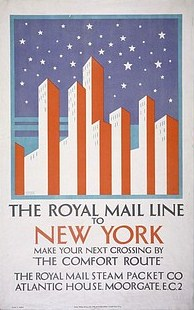
Depression Era & WPA Graphics
Historical Context: The Great Crash & The New Deal
The October 1929 Wall Street crash threw the world into economic paralysis. In the United States, President Franklin D. Roosevelt countered the crisis with the New Deal, creating the Works Progress Administration (WPA). Under Federal Project Number One (1935–1943), the government hired thousands of unemployed graphic artists to design civic posters promoting public health, literacy, theater, and national park tourism.
Stylistic Hallmarks & Technical Constraints
- Silkscreen Serigraphy Dominance: Scarcity forced artists to abandon expensive offset process printing in favor of screen printing, using 3 to 4 flat, opaque color separations.
- Stoic Heroism & Condensed Wood Type: Portraying the dignity of working-class laborers (farmers, carpenters, dockworkers) with bold, heavy, condensed sans-serif grotesques.
- Lester Beall's REA Modernism: Lester Beall's posters for the Rural Electrification Administration fused European Bauhaus avant-garde photomontage with bold arrows and primary symbols.
- Color & Type: Earthy terracotta, navy blue, dusty mustard, olive drab, forest green. Fonts: Futura Bold, Gill Sans, Kabel, Condensed Wood Type.
Classroom Checkpoint: Creative Power of Constraints
How did the extreme budget limitations of the 1930s Great Depression accidentally give birth to one of the most recognizable poster styles in history?
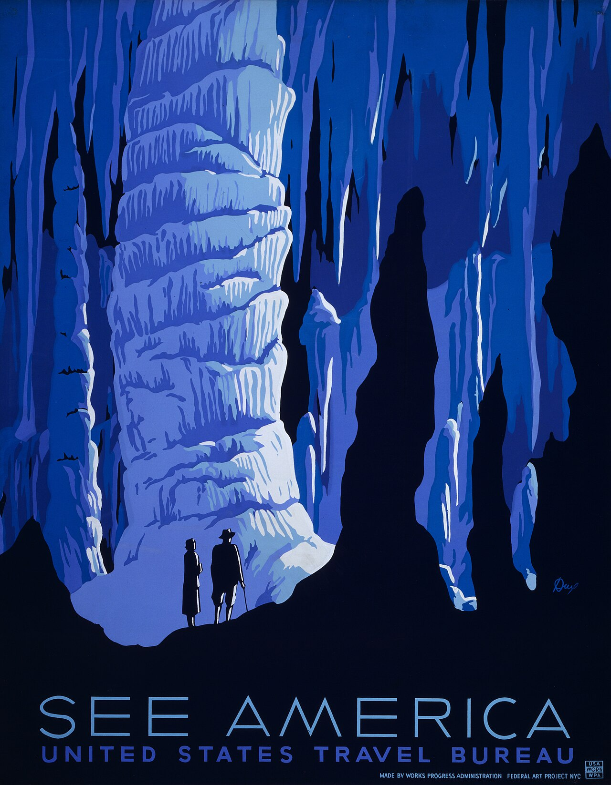
WWII Propaganda & Soviet Dynamics
Historical Context: Total Mobilization & Homefront Morale
With World War II engulfing the planet, commercial advertising transformed overnight into state-driven wartime mobilization. Governments mobilized citizens to buy war bonds, conserve scrap rubber and tin, avoid careless talk (“Loose Lips Sink Ships”), and step into defense factories to produce munitions, tanks, and aircraft around the clock.
Stylistic Hallmarks & Dynamic Composition
- The Kinetic 45-Degree Diagonal: Inherited from Soviet Constructivist agitprop (El Lissitzky, Alexander Rodchenko), diagonal vectors and wedges triggered immediate visceral urgency and heroic forward momentum.
- J. Howard Miller's ‘We Can Do It!’ (1943): Created for Westinghouse Electric, depicting a factory worker rolling up her sleeve with a clenched fist—an immortal symbol of industrial resilience and female power.
- High-Contrast Triad Palette: Intense patriotic red, deep industrial navy blue, stark charcoal, and caution yellow.
- Typefaces: Heavy military Stencil, Franklin Gothic, Futura, and Soviet Cyrillic bold grotesques with zero decorative flourishes.
Classroom Checkpoint: The Psychology of the Clenched Fist
Why did wartime posters universally rely on clenched fists, industrial rivets, and upward-angled perspective shots rather than realistic civilian portraits?
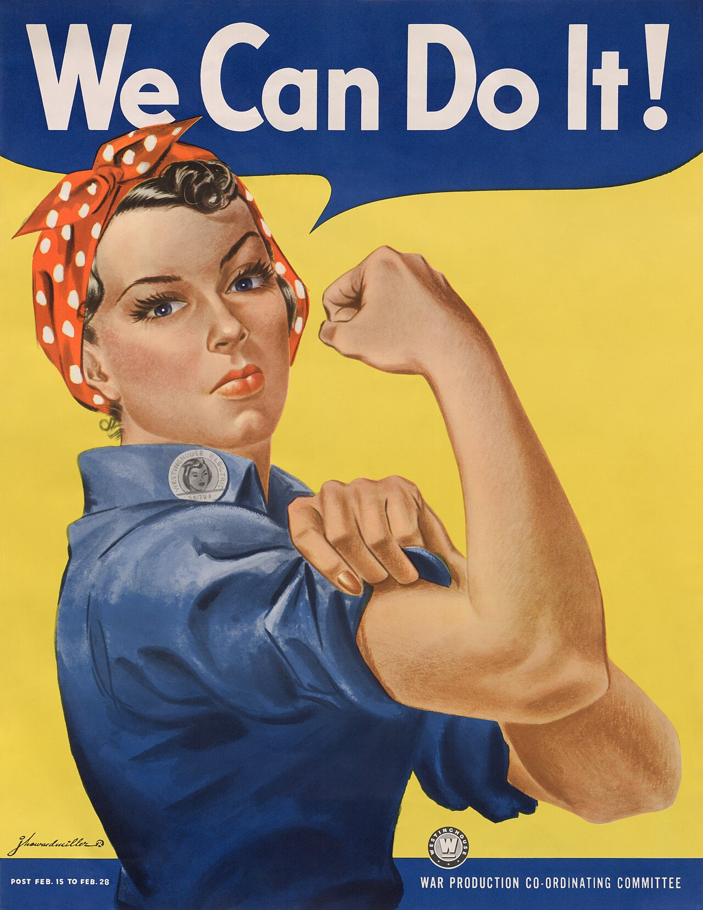
Economic Boom & Mid-Century Modern
Historical Context: Suburbia, Television & The Atomic Age
The post-WWII 1950s unleashed unprecedented consumer prosperity. American families moved into suburban tract homes filled with refrigerators, television sets, and station wagons. The Space Race, atomic energy discoveries, and the dawn of corporate multinational giants created a culture radiating with bright technological optimism and playful domestic freedom.
Stylistic Hallmarks & Seminal Innovators
- Organic Kidney & Boomerang Shapes: Asymmetrical fluid contours inspired by organic biology, Calder mobiles, and Eames furniture.
- Saul Bass's Film Title Revolution: Transformed cinematic advertising from mundane cast headshots into conceptual graphic metaphors (The Man with the Golden Arm, Vertigo) using jagged cut-paper silhouettes.
- Paul Rand's Corporate Modernism: Revolutionized American branding with timeless identities for IBM, ABC, and UPS, demonstrating that logos should be functional, witty, and geometrically distilled.
- The Birth of Helvetica (1957): Max Miedinger and Eduard Hoffmann created Neue Haas Grotesk in Switzerland, destined to become the undisputed corporate typography king.
- Atomic Pastel Palette: Mint teal, coral pink, buttercup yellow, atomic orange, and charcoal grey.
Classroom Checkpoint: The Conceptual Poster Metaphor
Why was Saul Bass's cut-paper poster for 'The Man with the Golden Arm' (featuring a jagged geometric arm) considered a seismic shock to Hollywood conventions?
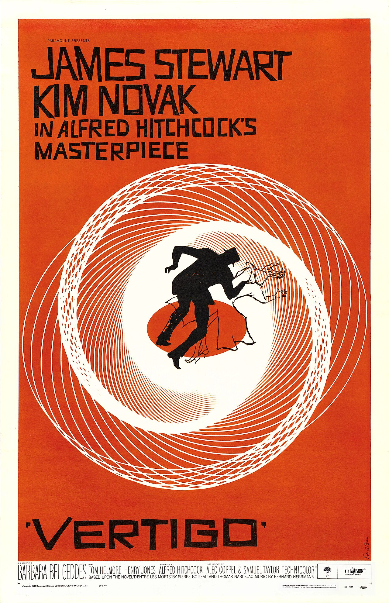
Swiss Precision vs. Psychedelic Rock
Historical Context: The Great Ideological Duality
No decade illustrates the visual pendulum more vividly than the 1960s. The world divided into two radically opposed visual philosophies: on one side stood the corporate establishment demanding scientific Swiss objectivity; on the other stood the anti-war youth counterculture in San Francisco igniting the hallucinogenic psychedelic revolution.
The Two Competing Movements Side-by-Side
- Swiss Style (International Typographic Style): Josef Müller-Brockmann and Armin Hofmann codified the mathematical modular grid, objective black-and-white photography, flush-left rag-right typography, and the total eradication of arbitrary decoration.
- Psychedelic Counterculture: Wes Wilson, Victor Moscoso, and Rick Griffin created Fillmore concert posters featuring melting, hand-lettered warped typography that pushed illegibility to the limit.
- Retinal Vibration Contrast: Psychedelic designers paired high-saturation complementary colors (electric magenta against day-glo green, cyan against orange) that created optical illusions and shimmering vibrations on the retina.
- Typefaces: Swiss: Helvetica & Univers. Psychedelic: Freehand melting Art Nouveau-inspired letterforms.
Classroom Checkpoint: The Illegibility Paradox
Why did psychedelic concert poster designers intentionally design lettering that was almost impossible to read for mainstream adults?
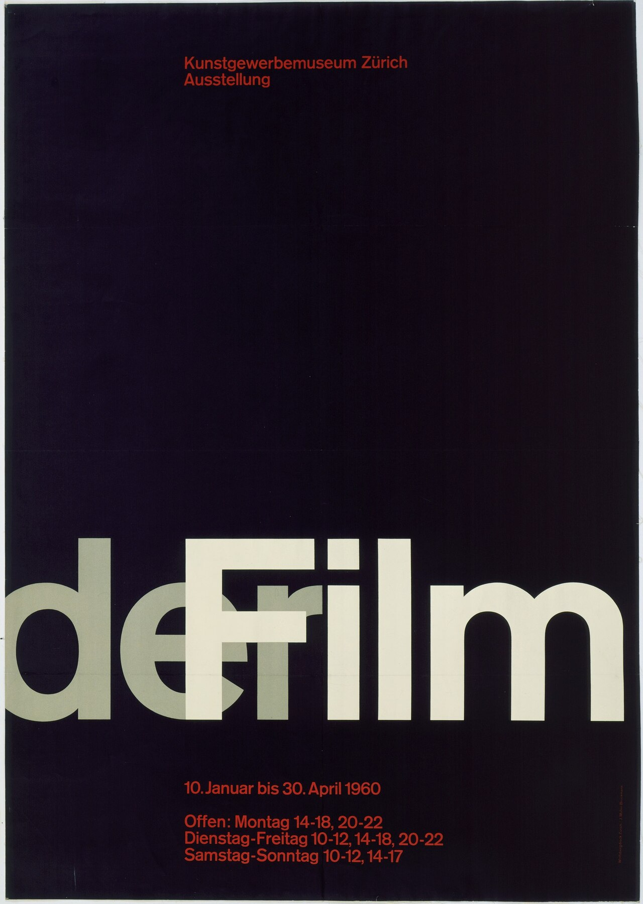
Punk Rebellion & Groovy Funk
Historical Context: Oil Crises, Stagflation & Disco
The 1970s opened in economic malaise: global oil embargoes, inflation, and political disillusionment (Watergate). Mainstream culture embraced comforting, escapist warmth through disco dance clubs, funk grooves, and earth-toned interior decor. Simultaneously in London and New York, alienated working-class youths unleashed Punk Rock—a furious anti-establishment explosion that democratized graphic design forever.
Stylistic Hallmarks & The DIY Xerox Explosion
- Jamie Reid's Punk Ransom Notes: Armed with 5-cent Xerox photocopiers, scissors, and torn newspaper headlines, Jamie Reid created the Sex Pistols' visual identity (God Save the Queen, Never Mind the Bollocks), establishing the DIY punk fanzine subculture.
- Groovy Multi-Line Rainbows: Mainstream 70s typography featured multi-stroke outlines, soft concentric curves, and plump bulbous letterforms like Cooper Black and ITC Benguiat.
- Milton Glaser's ‘I ♥ NY’ (1977): Designed on a torn paper napkin with red crayon in the back of a taxi, creating the most reproduced pop logo in human history.
- The Earthy 70s Palette: Avocado green, harvest gold, burnt orange, mustard yellow, and chocolate brown, contrasted with punk's stark xerox black, white, and shock neon pink.
Classroom Checkpoint: The Democratization of the Press
Why was the office Xerox photocopier just as revolutionary for 1970s punk designers as desktop software was for 1990s designers?
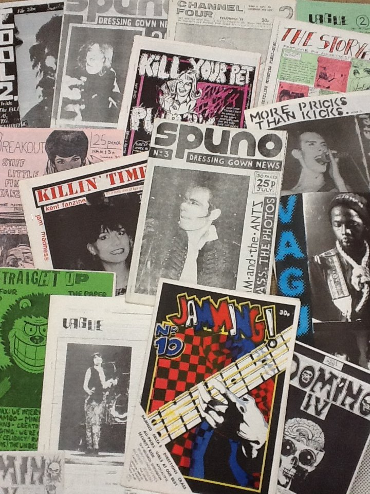
Excess, Memphis & Neon Synthwave
Historical Context: Wall Street Boom, MTV & The Mac
The 1980s was an era of unabashed consumer extravagance, blockbuster cinema, arcade gaming, synth-pop, and the birth of cable television with MTV (1981). In January 1984, Steve Jobs unveiled the Apple Macintosh, kicking off the digital desktop publishing revolution and placing PostScript typography directly onto personal computer desks.
Stylistic Hallmarks & The Memphis Group
- The Memphis Milano Movement: Formed in 1981 by Ettore Sottsass, Memphis rejected modernist “good taste” in favor of playful kitsch, squiggles, zig-zags, confetti dots, zebra patterns, and plastic laminates.
- Neon Cyberpunk & 3D Synthwave Grids: Receding neon perspective wireframes terminating at chrome sunset horizons, airbrushed metallic bevels, and laser yellow highlights.
- MTV's Kinetic Morphing Identity: Designed by Manhattan Design, the MTV “M” was never static—it transformed into clay, spray-paint, glass, and animated wireframes, creating the first truly dynamic motion identity.
- Palette & Fonts: Electric hot pink, neon cyan, laser yellow, chrome silver, deep violet. Fonts: Mistral, Chicago, Neon Script, bitmapped dot-matrix fonts.
Classroom Checkpoint: The Anti-Design Manifesto
Why did highbrow design critics in 1981 call Memphis Milano design 'a shotgun wedding between Bauhaus and Fisher-Price toys'?
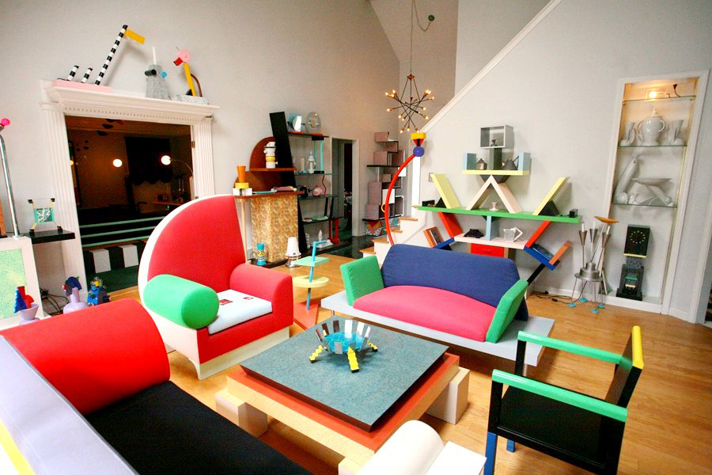
Grunge, Deconstructivism & Y2K Tech
Historical Context: Digital Desktop Revolution & Web 1.0
The 1990s witnessed the full digitization of graphic design. With the launch of Adobe Photoshop 1.0 (1990), Illustrator, and QuarkXPress, designers gained god-like control over pixel layers, Gaussian blurs, and digital transparency. In 1991, Tim Berners-Lee opened the World Wide Web to the public, setting off a scramble to translate print principles to early browser screens.
Stylistic Hallmarks & The Carson Rebellion
- David Carson & Ray Gun Magazine: Carson demolished editorial conventions: type was overlapping, upside down, tracks collided, and columns were fragmented into emotional textures. He argued: “Don't mistake legibility for communication.”
- Grunge & Distressed Surfaces: Barcodes, industrial warning stripes, dirty photocopied halftones, masking tape, and scratched film borders echoing the Seattle grunge music of Nirvana and Pearl Jam.
- The Y2K Aesthetic & Cyber-Optimism: Translucent bubble gum colored plastics (Apple iMac G3 1998), 3D chrome liquid metal blobs, wireframe globes, and techno rave flyers anticipating the new millennium.
- Calvin Klein Editorial Minimalism: In parallel, high-fashion editorial embraced stark black-and-white photography, generous negative space, and pristine sans-serif typography.
Classroom Checkpoint: The Zapf Dingbats Incident
In Ray Gun issue #35, David Carson set an entire feature interview with rock star Bryan Ferry in the font Zapf Dingbats (pure unreadable pictograms). Why?
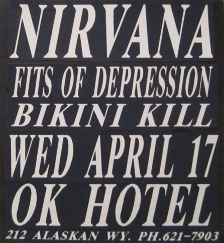
Web 2.0 Gloss, iPod & Skeuomorphism
Historical Context: Broadband, The iPod & Touchscreens
Emerging from the 2000 dot-com crash, the new millennium ushered in broadband internet, interactive social communities (MySpace, early Facebook), and Apple's hardware renaissance under Steve Jobs and Jony Ive. The launch of the iPod (2001) and the iPhone (2007) transitioned millions of humans from desktop monitors to pocket glass touchscreens.
Stylistic Hallmarks & Digital Material Metaphors
- Web 2.0 Gloss & Aqua Buttons: Lickable translucent gel buttons with curved reflection highlights, 3D pill badges, wet-floor mirror reflections, and gradient drop shadows.
- Digital Skeuomorphism: Designing software interfaces to mirror real-world physical objects: stitched leather borders in Notes, brushed aluminum panels in QuickTime, and wooden bookshelves in iBooks.
- Apple's iPod Silhouette Campaign (TBWA\Chiat\Day): Crisp jet-black dancing silhouettes against blazing solid neon pink, lime, and orange backgrounds with iconic pure-white earbuds and click-wheel devices.
- Corporate Geometric Simplification: Rebranding legacy corporate identities with rounded friendly typography and cleaner vector geometry. Fonts: Gotham (2000), Proxima Nova (2005), Myriad.
Classroom Checkpoint: The Skeuomorphic Training Wheels
Why was digital skeuomorphism (fake leather, glossy buttons, realistic shadows) a brilliant ergonomic necessity in 2007, but considered obsolete by 2013?
Flat Design, Material & Social Media
Historical Context: Mobile First & The Social Feed Economy
By 2010, the smartphone had become the primary lens through which humanity consumed information. The launch of Instagram (2010), responsive mobile web grids, and the rise of the creator economy meant graphic design was no longer created for billboard walls or glossy magazine spreads—it was engineered for 5-inch vertical glass rectangles and infinite algorithmic feeds.
Stylistic Hallmarks & The Flat Overhaul
- The Flat Revolution (iOS 7 & Windows Metro): Total annihilation of skeuomorphism: zero drop shadows, zero gloss, and zero faux textures. Clean vector color blocks and razor-sharp typographic hierarchy optimized for Retina screens.
- Google Material Design (2014): Synthesized flat design with tactile realism, introducing “digital paper and ink” where subtle drop shadows convey physical z-axis elevation and motion physics.
- Social-First 1:1 and 9:16 Formats: Instagram square cards, bold shareable quote infographics, multi-slide carousels, and millennial pink / violet-to-orange brand gradients.
- Corporate ‘Blanding’ Homogenization: Historic fashion houses (Burberry, Balmain, Yves Saint Laurent) and tech giants swapped century-old serif logos for identical geometric grotesques to ensure micro-legibility on smartwatch screens.
Classroom Checkpoint: The Corporate 'Blanding' Epidemic
Why did almost every luxury fashion brand in the 2010s trade their distinctive, ornate heritage logos for virtually identical bold black sans-serif words?
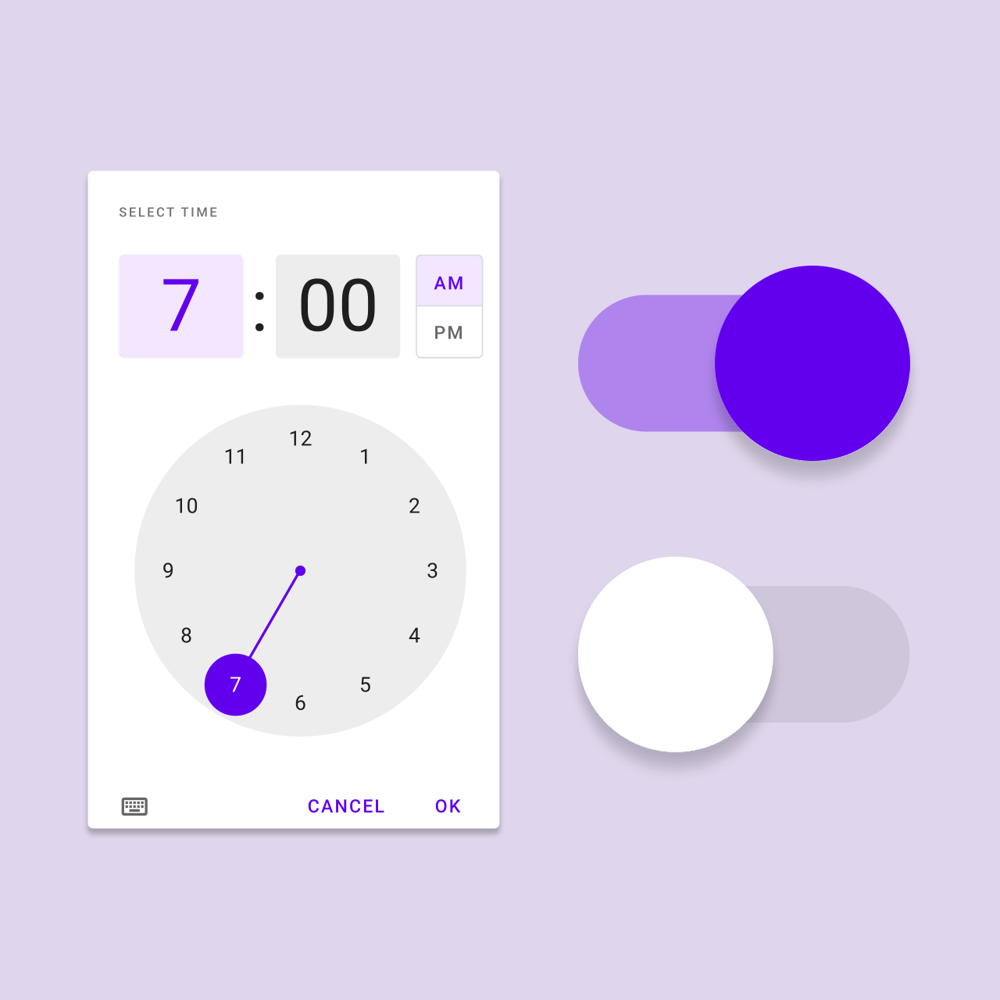
Neo-Brutalism, Eco & Neo-Futurism
Historical Context: Climate Urgency, Gen Z & Generative AI
Entering the 2020s, global designers confronted climate crisis realities, pandemic remote transformations, and the sudden emergence of Generative AI tools (Midjourney, DALL-E, Stable Diffusion). Burned out by a decade of sanitized, sterile, identical corporate SaaS templates, young designers revolted with raw, unapologetic, anti-perfection aesthetics.
Stylistic Hallmarks & The Post-Template Frontier
- Neo-Brutalism in UI: Heavy 3px to 4px solid black borders, hard offset drop shadows with zero blur, stark acid lime (#ccff00) and electric violet accents, and playful sticker badges (Gumroad, Figma community).
- Sustainability & Eco-Minimalism: Muted earthy palettes (sage, clay terracotta, stone, raw kraft paper), ink-saving line art, and dark-mode defaults engineered to reduce physical chemical footprints and OLED battery consumption.
- Neo-Futurism & 3D Holographic Chrome: Iridescent liquid chrome typography, acid graphics, kinetic variable fonts that stretch dynamically along motion axes, and glassmorphic translucent panels.
- Generative AI Co-Creation: Machine-synthesized surrealist dreamscapes, algorithmic texture generation, and human-in-the-loop creative direction.
Classroom Checkpoint: The Neo-Brutalist Rejection
How does 2020s Neo-Brutalism prove the 'Pendulum of Design' theory introduced in Slide 1?
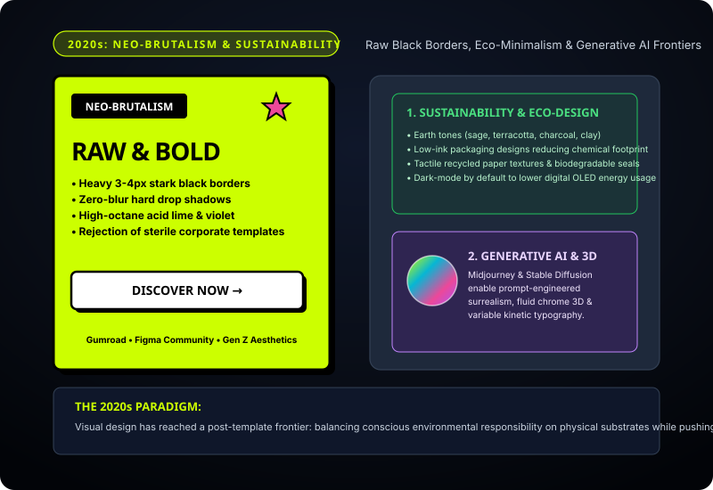